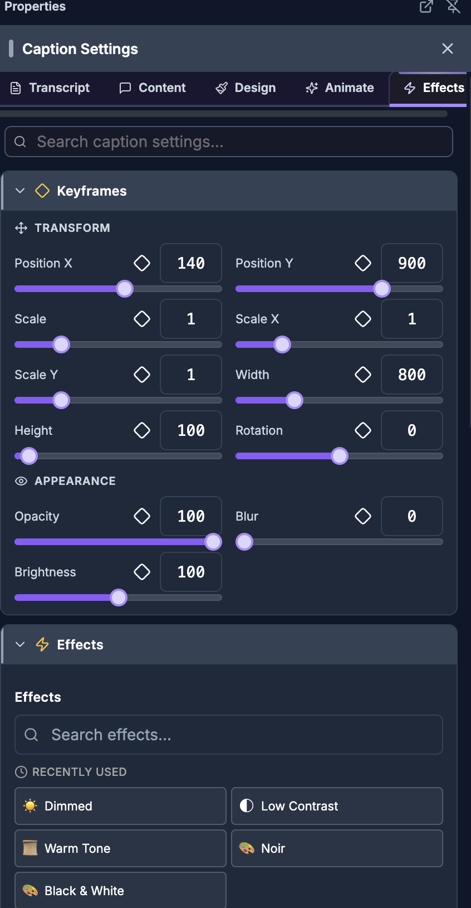

For humans — and for AI helping humans. This document describes how a person edits video by hand using the on-screen controls of the SkillTown video editor. It is not an AI skill or an automation API, so if you are an AI agent, do not treat these steps as callable commands — for programmatic/automated editing use the agent skills and commands documented elsewhere (see
_Agent/AGENTS.md). You may, however, read this doc to answer a user's "how do I…" questions and walk them, step by step, through performing these actions themselves in the editor UI.Add preset motion to selected items, then fine-tune movement, appearance, speed, and audio changes over time with keyframes.
Where to find it¶
Select an item on the canvas or timeline, then open the Properties panel. Most editable items show an Animations section and a Keyframes section.
For images, the motion workflow is expanded into Style Template, Entry Animation, Exit Animation, Animations, and Keyframes sections. For shapes and scene/template items, keyframes appear in the Effects tab. Keyframe markers also appear as yellow diamonds directly on the timeline.
Caption items can show an Animations section with an Animation button, and caption style preset pickers include live preview cards.
What you can do¶
- Apply quick animation presets from In, Loop, and Out tabs.
- Adjust Animation In Duration, Animation Loop Duration, and Animation Out Duration after choosing a quick preset.
- Choose image-focused Entry Animation and Exit Animation keyframe presets, or choose None to clear one side.
- Apply a complete Style Template such as Documentary, Social Media, Cinematic, Dynamic, Elegant, or Energetic.
- Tune preset tracks with Tweak Parameters, including Start, End, Duration (frames), and Easing.
- Preview caption presets live, search them, switch Words/Lines, change the preview background, and try Preview with your own text....
- Turn Sound Effects ON so matching sounds are added with animation presets.
- Add keyframes to supported properties such as Position X, Position Y, Scale, Opacity, Rotation, Blur, Brightness, Speed, and Volume.
- Edit keyframe values, delete keyframes, and choose easing from the Keyframe List.
- Use yellow timeline diamonds to see which moments are keyframed.
- Apply animations to multiple selected items, including bulk caption selections.
How to apply quick item animations¶

- Select the item you want to animate.
- In Properties, expand Animations.
- Click the Animation dropdown. A floating Animations picker opens.
- Choose a tab: - In controls how the item appears. - Loop controls motion while the item remains visible. - Out controls how the item leaves.
- Click a preset tile. The selected tile is highlighted, and the item animates in the player.
- On small screens, the same In, Loop, and Out tabs appear directly in the Animations section.
- If duration controls appear, drag Animation In Duration, Animation Loop Duration, or Animation Out Duration to change how long that part of the animation lasts.
Quick animation preset labels:
| Tab | Presets |
|---|---|
| In | Fade, Scale, Slide Right, Slide Left, Slide Top, Slide Bottom, Rotate, Flip, Shake Horizontal, Shake Vertical, Type Writer, Animated Text, Sunny Mornings, Domino Dreams, Great Thinkers, Beatiful Questions, Made With Love, Reality is Broken, Drop Animation In, Descompress Animation In, Count Down Animation In, Sound Wave Animation In, Background Animation In |
| Loop | Pulse Animation Loop, Glitch Animation Loop, Font Change Animation Loop, Vintage Animation Loop, Shaky Letters Animation Loop, Shake Text Animation Loop, Rotate 3D Animation Loop, Heartbeat Animation Loop, Spin Animation Loop, Wave Animation Loop, Vogue Animation Loop, Dragon Fly Animation Loop, Billboard Animation Loop |
| Out | Fade, Scale, Slide Right, Slide Left, Slide Top, Slide Bottom, Shake Horizontal, Shake Vertical, Type Writer, Animated Text, Sunny Mornings, Domino Dreams, Great Thinkers, Beautiful Questions, Made With Love, Reality is Broken, Drop Animation Out, Descompress Animation Out, Background Animation Out |
How to adjust quick animation duration¶
- Apply a quick In, Loop, or Out animation.
- Use the matching duration slider:
| Slider | What it changes |
|---|---|
| Animation In Duration | Length of the item's entrance animation. |
| Animation Loop Duration | Length of the repeating loop segment. |
| Animation Out Duration | Length of the item's exit animation. |
Each duration slider shows 0 on the left and the maximum available seconds on the right. The maximum depends on the item's total length and the other animation durations already applied.
How to use image animation presets¶
- Select an image.
- Open Properties and expand Style Template if you want a one-click combination.
- Open Choose a style... and choose a style template.
| Style | What it does |
|---|---|
| Custom (manual) | Leaves entry and exit choices under your control. |
| Documentary | Slow Ken Burns zoom with gentle fade out. Classic documentary feel. |
| Social Media | Punchy scale in/out with quick timing. Attention-grabbing. |
| Cinematic | Elegant fade with blur transitions. Film-like quality. |
| Dynamic | Slide in from left, slide out to right. High-energy transitions. |
| Elegant | Subtle scale & fade entrance with soft fade exit. Refined look. |
| Energetic | Rotate in with slide out. Bold and playful. |
- To choose manually, expand Entry Animation or Exit Animation.
- Open the preset menu and choose a preset, or choose None to clear that side.
- The preset description appears below the menu.
- Click Tweak Parameters if you want to customize it.
- If you changed values and want to apply the same choices again, click Re-apply with current settings.
Entry and exit preset reference¶
Available Entry Animation presets:
| Preset | Description | Animated properties |
|---|---|---|
| Scale In | Item scales from 50% to 100% with smooth easing | Scale |
| Scale In (Bounce) | Item scales from small with a bouncy overshoot | Scale |
| Fade In | Item fades in from transparent | Opacity |
| Scale & Fade In | Item scales and fades in simultaneously | Scale, Opacity |
| Zoom In | Dramatic zoom from very small size | Scale, Opacity |
| Slide Up | Item slides up from below | Position Y, Opacity |
| Slide Down | Item slides down from above | Position Y, Opacity |
| Slide In Left | Item slides in from the left with a fade | Position X, Opacity |
| Slide In Right | Item slides in from the right with a fade | Position X, Opacity |
| Blur In | Item starts blurry and comes into focus | Blur, Opacity |
| Rotate In | Item rotates and scales up into view | Rotation, Scale, Opacity |
| Draw On (Shape) | Stroke-based shape draws itself from start to end | Dash Offset, Opacity |
| Fill Fade In (Shape) | Shape fill fades in while stroke stays visible | Fill Opacity |
| Grow (Shape) | Shape width and height animate from small to full size | Width, Height |
Available Exit Animation presets:
| Preset | Description | Animated properties |
|---|---|---|
| Scale Out | Item scales down and disappears | Scale |
| Fade Out | Item fades out to transparent | Opacity |
| Scale & Fade Out | Item scales down and fades out simultaneously | Scale, Opacity |
| Slide Out Left | Item slides off to the left | Position X, Opacity |
| Slide Out Right | Item slides off to the right | Position X, Opacity |
| Slide Up Out | Item slides up out of view | Position Y, Opacity |
| Slide Down Out | Item slides down out of view | Position Y, Opacity |
| Blur Out | Item blurs and fades away | Blur, Opacity |
| Rotate Out | Item rotates and scales down to disappear | Rotation, Scale, Opacity |
Other keyframe preset types you may see¶
Some preset tools also include motion and emphasis presets. These are not the main Entry Animation/Exit Animation dropdown choices, but they describe the same keyframe preset system.
| Category | Presets |
|---|---|
| Motion | Ken Burns, Ken Burns + Drift, Drift |
| Emphasis | Pulse, Breathe, Stroke Pulse (Shape) |
| Transform | Pop In & Out |
How to tweak preset parameters¶
- Choose an Entry Animation or Exit Animation preset.
- Click Tweak Parameters.
- Each animated property appears as a card, such as Scale, Opacity, Position X, Position Y, Rotation, Blur, or Brightness.
- Edit the controls in the card.
| Control | What it changes |
|---|---|
| Start | The first value in the preset motion. For an exit preset, this is still shown as the first editable value in the card. |
| End | The final value in the preset motion. |
| Duration (frames) | How many frames the preset takes. The displayed value ends in f. |
| Easing | The acceleration curve used by the preset. |
When you change a parameter, (modified) appears beside Tweak Parameters. Click Reset to Defaults to return that preset to its original values.
How to use the live preset preview¶
Caption preset pickers show live preview cards instead of static thumbnails when possible. The preview plays the same caption renderer used in the editor, so you can judge motion, word highlighting, stroke, fill, and background behavior before applying a preset.
- Open a caption preset picker.
- Use Words to preview word-by-word styles, or Lines to preview line-based styles.
- Type in Search presets... to filter by preset name.
- Click the preview background button. Its tooltip says Change preview background — preview how captions look on your video.
- In the background panel, use Preview background — see how captions look on your video color.
- Choose Dark, White, Gray, Green, Blue, Red, or use the custom color picker whose tooltip says Pick custom color.
- Click Reset to clear the chosen preview background.
- Type in Preview with your own text... to test the preset with your own words. The preview text is capped at 40 characters and up to 6 words.
- Click × to clear custom preview text. The tooltip says Clear custom text.
- Click a preset card to apply it, or click None to remove the preset.
If a live preview cannot render, the card falls back to a simple Text style preview instead of interrupting the picker.
How to add keyframes to a property¶
A keyframe stores a property value at a specific frame. Two or more keyframes on the same property create a smooth change between those values.
- Select the item you want to animate.
- Move the playhead to the frame where the change should start.
- Open Keyframes.
- Find the property you want under Transform, Appearance, Speed, Volume, or Shape.
- Click the diamond beside the property. The tooltip changes based on state: - Add keyframe (enables keyframing) means the property has no keyframes yet. - Add keyframe at current frame means the property is already keyframed, but not at the current frame. - Remove keyframe means the current frame already has a keyframe. - Unavailable for auto sizing means the property cannot be keyframed in the item's current sizing mode.
- Adjust the property value with the slider or number field.
- Move the playhead to another frame.
- Change the value again. If the property is already keyframed, the editor adds or updates the keyframe at that frame.
Supported property groups:
| Group | Properties | Where it appears |
|---|---|---|
| Transform | Position X, Position Y, Scale, Scale X, Scale Y, Width, Height, Rotation | Most visual items. |
| Appearance | Opacity, Blur, Brightness | Most visual items. |
| Speed | Speed | Video and audio-capable media items. |
| Volume | Volume | Video and audio items. |
| Shape | Stroke Width, Fill Opacity, Dash Offset | Shape or rectangle items. |
If a text-like item uses automatic height, the height control may show Auto and the tooltip Unavailable for auto sizing.
How keyframe values behave¶
| Property | How to think about the value |
|---|---|
| Position X | Shown as the item's canvas X position, but animated as movement from that item's base position. |
| Position Y | Shown as the item's canvas Y position, but animated as movement from that item's base position. |
| Scale | A multiplier of the item's current fitted size; 1 means the item's normal size. |
| Scale X / Scale Y | Separate horizontal and vertical scale controls. |
| Rotation | Degrees. The field shows values such as 0 or 90 while the item rotates visually. |
| Opacity | Percent from 0 to 100. |
| Blur | Pixels of blur. |
| Brightness | Percent brightness; 100 is normal. |
| Speed | Playback speed multiplier. |
| Volume | Percent volume. |
| Stroke Width | Shape outline width in pixels. |
| Fill Opacity | Shape fill opacity percent. |
| Dash Offset | Shape stroke dash offset in pixels. |
| Width / Height | Item size in pixels, unless Height is locked as Auto. |
How to edit and remove keyframes¶
- Open Keyframes on the selected item.
- If the item has keyframes, yellow property chips appear, such as Opacity (2) or Position X (3).
- Click a property chip to show its Keyframe List.
- Click the Keyframe List header to collapse or expand the list.
- In the list, click a row to jump the playhead to that keyframe.
- Use the left and right arrow buttons to jump to the previous or next keyframe for that property.
- Edit the number field in a row to change the keyframe value.
- Use the easing dropdown in the row to change motion into the next keyframe.
- Click the trash button to delete a keyframe.
If the selected property has no keyframes, the list says No keyframes.
| Action | On-screen cue | Result |
|---|---|---|
| Add first keyframe | Empty diamond; tooltip Add keyframe (enables keyframing) | Creates the property track and stores the current value. |
| Add another keyframe | Yellow outlined diamond; tooltip Add keyframe at current frame | Adds a keyframe at the current playhead frame. |
| Remove current keyframe | Filled yellow diamond; tooltip Remove keyframe | Deletes the keyframe at the current frame. |
| Select a keyframed property | Chip such as Scale (2) | Opens that property's Keyframe List. |
| Navigate keyframes | Left and right arrow buttons in Keyframe List | Seeks to the previous or next keyframe. |
| Edit a keyframe | Number field in a keyframe row | Changes that keyframe's stored value. |
| Change interpolation | Easing dropdown in a keyframe row | Changes how the value moves into the next keyframe. |
| Delete from list | Trash button | Removes that keyframe. |
How easing and interpolation work¶
Easing controls how the value travels from one keyframe to the next. In the Keyframe List, the easing on a row belongs to the keyframe you are leaving; it controls the movement into the next keyframe.
The Keyframe List easing menu includes:
| Easing labels |
|---|
| Linear, Ease, Ease In, Ease Out, Ease In Out |
| In Quad, Out Quad, InOut Quad |
| In Cubic, Out Cubic, InOut Cubic |
| In Back, Out Back, InOut Back |
| In Elastic, Out Elastic |
| In Bounce, Out Bounce |
Preset parameter editors use the expanded labels:
| Easing labels |
|---|
| Linear, Ease, Ease In, Ease Out, Ease In Out |
| Ease In Quad, Ease Out Quad, Ease In Out Quad |
| Ease In Cubic, Ease Out Cubic, Ease In Out Cubic |
| Ease Out Back, Ease In Back |
| Ease Out Expo, Ease In Expo |
| Ease Out Bounce, Ease In Bounce |
| Ease Out Elastic, Ease In Elastic |
How to use keyframes on the timeline¶
- Add keyframes from the Keyframes section.
- Look at the timeline: each keyframed moment appears as a yellow diamond marker on the item or track row.
- Use the diamonds as visual navigation markers for where keyframes exist inside the selected item's duration.
- Open Properties to continue editing the selected item's Keyframes.
| Timeline marker | What it means |
|---|---|
| Yellow diamond | One or more properties have a keyframe at that moment. |
| Multiple properties at the same frame | Still shown as one diamond at that frame. |
| No diamond | No keyframe exists at that moment for that item. |
How to add sound effects with presets¶
- Select an image and open Style Template.
- Click Sound Effects to switch it ON.
- Apply a Style Template, Entry Animation, or Exit Animation.
- The editor adds matching audio items on a Preset SFX track. When sound effects are active, the section can show (N SFX applied).
- Click Sound Effects again to switch it OFF before applying presets if you want silent motion.
When Vary is ON for multiple selected images, the editor can alternate both motion choices and matching sounds. Presets with mapped sounds include Scale In, Scale In (Bounce), Fade In, Scale & Fade In, Zoom In, Slide Up, Slide Down, Slide In Left, Slide In Right, Blur In, Rotate In, Scale Out, Fade Out, Scale & Fade Out, Slide Out Left, Slide Out Right, Slide Up Out, Slide Down Out, Blur Out, and Rotate Out.
Sound timing follows the visual preset:
| Sound behavior | What happens |
|---|---|
| Entry sound | Starts near the entry animation start. |
| Exit sound | Starts near the exit animation start. |
| Staggered items | Entry sounds are offset to match the visual stagger. |
| Vary | Alternates between the primary sound and alternate sound choices where available. |
| Re-applying presets | Previous preset SFX for the same image are removed, then new ones are added. |
How to work with multiple selected items¶
- Select multiple images or items that support bulk animation controls.
- In Animations, the label can show (All N) to indicate all selected items are targeted.
- In the quick animation picker, preset tiles can show (N) under the preset name to show how many selected items will receive the animation.
- Use Stagger (frames between items) to delay each selected item by a small number of frames.
- Turn Vary ON to give each image a different animation.
- Use Copy to copy animation settings from the first selected item.
- Use Paste to All to apply the copied animation to the full selection.
- For captions, the floating Animations picker can show Bulk (N) when multiple captions are selected.
Bulk behavior:
| Control | Bulk result |
|---|---|
| Quick Animations preset | Applies the chosen In, Loop, or Out preset to all targeted items. |
| Entry Animation / Exit Animation | Applies the chosen keyframe preset to all targeted images or supported items. |
| Stagger (frames between items) | Offsets each successive item's entry keyframes by that many frames. |
| Vary | Cycles through complementary entry and exit presets instead of using the exact same preset on every item. |
| Copy | Copies animation settings from the first selected item. |
| Paste to All | Applies the copied settings to every selected item. |
| Caption Bulk (N) | Applies the caption animation to all selected captions. |
How to clear animations, keyframes, and effects¶
- Open the selected item’s properties.
- Click Remove All Keyframes & Effects. In bulk mode, the button reads Remove All Keyframes & Effects (N).
- Review the warning dialog Remove All Keyframes & Effects?.
- The dialog summarizes Content to be removed: and may list Keyframes: N/N items, Effects: N/N items, or Animations: N/N items.
- Click Remove All to confirm, or Cancel to keep everything.
The confirmation text notes that You can undo this action with Ctrl+Z. If preset sound effects were added with those animations, clearing can remove the linked preset SFX too.
Tips & good to know¶
- Quick Animations presets and Keyframes can both affect the same item. If motion becomes hard to reason about, simplify one system first.
- Entry Animation keyframes start near the beginning of the item. Exit Animation keyframes are placed near the end of the item.
- Some preset durations are automatically shortened for very short clips so the animation does not take over the whole item.
- Slide-style presets adapt to the current canvas size, so the same preset works on portrait and landscape projects.
- Scale keyframes are relative to the item’s current fitted size. This keeps image presets from jumping when an image was automatically fit to the canvas.
- Position X and Position Y keyframes behave like movement from the item’s base position, even though the controls show the canvas position.
- In the Keyframe List, easing belongs to the keyframe you are leaving; it controls the movement into the next keyframe.
- Use Linear for constant motion, Ease Out for natural settling, Out Back for overshoot, and Out Bounce for playful motion.
- Timeline diamonds show where keyframes exist. To change values, open the item’s Keyframes controls.
- Sound Effects are applied when you apply or re-apply animation presets while the toggle is ON.
- If you remove all keyframes and effects, linked preset SFX are removed too.
- None in an animation preset menu clears that preset side without choosing a replacement.
- Custom before a preset name means the preset's keyframes were manually modified after the preset was applied.
- Live caption preview cards only mount while they are near the visible picker area, so scrolling may start or stop previews.